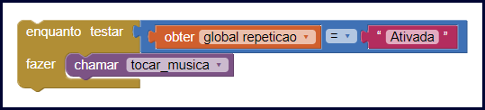

Nessa aula vamos aprender o que são as estruturas de repetição e como podemos usá-las no desenvolvimento dos nossos aplicativos no App Inventor.
Sabe quando você gosta de uma música e fica ouvindo ela várias vezes? Se você usa um aplicativo como o Spotify você pode usar a opção repetir para que o aplicativo fique repetindo a mesma música. Nos aplicativos que desenvolvemos também podemos fazer comandos que ficam repetindo por um determinado número de vezes.
Para conseguir criar essas repetições nós temos as estruturas de repetição que vamos aprender a usar nessa aula.
As estruturas de repetição nos permitem executar determinado trecho de código várias vezes sem precisar reescrevê-lo.
Imagine que você está desenvolvendo um sistema com o objetivo de acompanhar a temperatura interna de uma fábrica.
Nesse exemplo, o seu sistema deve executar um comando que mede a temperatura a cada 5 minutos, durante as 24 horas do dia e deve verificar se essa temperatura não está muito alta nem muito baixa.
O sistema fará em torno de 288 consultas por dia. Se não houvesse as estruturas de repetição você teria que reescrever o comando que consulta a temperatura 288 vezes.
Com o uso de uma estrutura de repetição você consegue fazer seu comando, que consulta a temperatura repetir quantas vezes você quiser.
Uma estrutura de repetição deve ser usada em momentos onde seu aplicativo deve executar um determinado trecho de código mais de uma vez, como no exemplo anterior onde o sistema deveria verificar a temperatura 288 vezes.
As estruturas de repetição também são usadas em situações onde não sabemos exatamente quantas vezes o programa deve repetir, como é o caso de um aplicativo de músicas, quando a música deve ficar repetindo até que o usuário desative a repetição.
E quando trabalhamos com listas as estruturas de repetição também são muito usadas, como quando você tem uma lista de produtos e precisa mostrar o nome de cada produto na tela, nessa situação a estrutura de repetição é usada para percorrer a lista e para cada item fazer imprimir o nome na tela.
As estruturas de repetição mais utilizadas são FOR, WHILE e FOR-EACH.
Vamos ver a seguir um exemplo de uso de cada uma das estruturas de repetição.
Como vimos anteriormente, a estrutura FOR é usada quando sabemos exatamente quantas vezes um comando deve ser repetido.
Vamos ver como podemos usar a estrutura FOR no App Inventor para criar o aplicativo que consulta a temperatura 288 vezes por dia.
Este bloco representa no App Inventor a estrutura de repetição chamada FOR.
No bloco apresentado ao lado da palavra “desde” é informado que o contador de repetições vai iniciar com o valor 1.
Ao lado da palavra “até” informamos a quantidade de vezes que a estrutura vai repetir, significa que quando o contador chegar em 288 a repetição vai acabar.
Ao lado da palavra “passo” informamos que o contador vai contar de um em um, ou seja, a cada repetição o contador vai aumentar um.
E por fim ao lado da palavra “fazer” podemos colocar os comandos que desejamos executar a cada repetição.
Como citado acima, a estrutura de repetição WHILE é usada quando não temos uma quantidade exata de vezes que precisamos repetir determinado comando, mas temos uma condição para parar a repetição.
Em um aplicativo de músicas nosso aplicativo não saberia exatamente quantas vezes o usuário iria escutar uma música, mas o aplicativo sabe que deve parar a repetição quando a opção de repetir for desmarcada.
Veja abaixo como poderíamos fazer isso no App Inventor.

O bloco enquanto representa a estrutura de repetição WHILE no App Inventor, para essa estrutura de repetição é necessário ter uma condição de parada.
Ao lado da palavra “testar” temos uma comparação, nessa comparação verificamos se o valor da variável “repeticao” é igual a “Ativada”. Ao lado da palavra “fazer” temos o comando que será repetido.
No exemplo, a estrutura vai repetir o comando “tocar_musica” enquanto a variável “repeticao” estiver com o valor igual a “Ativada”, assim que a variável tiver seu valor alterado a estrutura de repetição é finalizada.
A estrutura de repetição FOR-EACH é usada sempre que você tem uma lista e precisa percorre-la.
Imagine que você tem uma lista de produto, e agora precisa percorrer essa lista para exibir o nome de cada produto na tela um por um.
Veja abaixo como poderíamos fazer isso usando a estrutura FOR-EACH no App Inventor.
O bloco “para cada item na lista” representa a estrutura que chamamos de FOR-EACH, perceba que para usarmos essa estrutura de repetição primeiro criamos uma variável que recebe uma lista.
Ao lado da palavra “lista” do bloco de repetição nós colocamos a variável “produtos” que representa uma lista com cinco produtos.
Após a palavra “fazer” nós chamamos o método que imprime o nome do produto na tela do celular. Assim para cada item que há na lista será chamado o método que imprime o nome do produto.
Nessa aula nós aprendemos como funcionam e como usar as estruturas de repetição no App Inventor, com essas estruturas nós podemos repetir determinado comando quantas vezes for necessário.
Na próxima aula vamos desenvolver um aplicativo utilizando as estruturas de repetição, pois praticando você pode aprender ainda mais.
Caso você tenha ficado com dúvidas ou tenha alguma sugestão mande sua pergunta ou envie uma mensagem para nós, responderemos o mais rápido possível.
Até a próxima aula.
ZANELATO, Jessica. Lógica de Programação - estruturas de repetição. PodProgramar, 2018. Disponível em: https://podprogramar.com.br/logica-de-programacao-estruturas-de-repeticao. Acesso em: 01 de setembro de 2019.
Alisson. Estrutura de Repetição: C++. DevMedia, 2012. Disponível em: https://www.devmedia.com.br/estrutura-de-repeticao-c/24121. Acesso em: 05 de setembro de 2019.
ALVES, Gustavo Furtado de Oliveira. Estrutura de repetição PARA. Dicas de Programação, 2013. Disponível em: https://dicasdeprogramacao.com.br/estrutura-de-repeticao-para/. Acesso em: 05 de setembro de 2019.